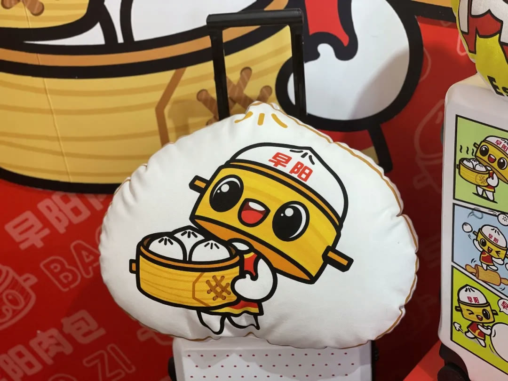
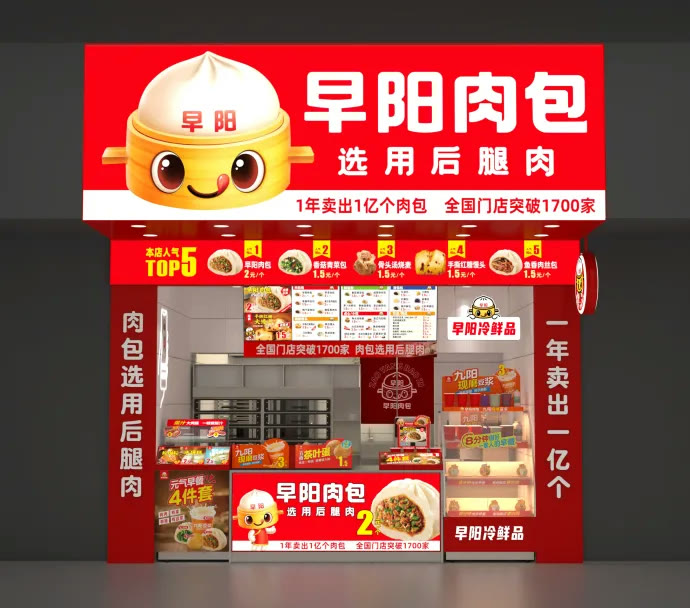

01 · 原型
超级符号先让人看懂行业
包子和蒸笼是消费者熟悉的早餐原型。项目将其转化为包子娃娃角色，使品牌无需额外解释就能连接品类。

02 · 角色
用角色建立亲切而可延展的品牌资产
包子娃娃不仅是标志，也能进入表情、包装和门店互动，形成可以长期运营的品牌角色。

03 · 门头
把辨识度最高的包子头放大
街道是早餐门店的竞争货架。门头以大尺度符号和高对比信息提高发现感，让路过顾客迅速认出早阳。

04 · 复制
统一系统服务大规模门店落地
原案例记录，截至2022年1月，新形象已在嘉兴289家门店落地。统一设计为后续规模化升级提供标准。
